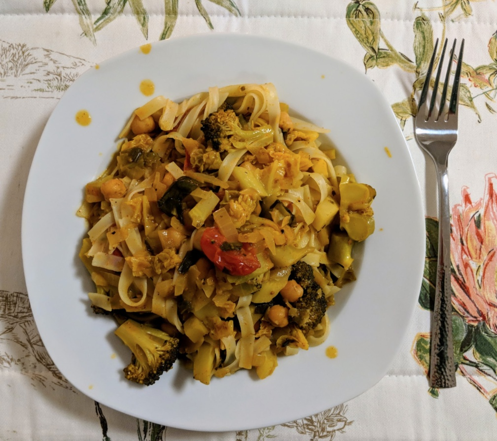

Ingredients
- 2 medium onions, chopped
- 2 Tbsp olive oil
- 3 cloves garlic
- 1-2 Tbsp red Thai curry paste
- 1.5 cans coconut milk
- 1 can chickpeas, drained (or 125g dry)
- Chopped green veg of choice and desired amount (e.g broccoli, kale, cabbage)
- 1-2 Tbsp soy sauce
- Cherry tomatoes equivalent to 2-3 tomatoes
- 1 cup fresh basil leaves, chopped
- ½ lime (or lemon juice)
- Rice/rice noodles or equivalent
Instructions
- Heat oil in pan, add onion and cook on medium heat until soft and transparent, then add the
garlic and cook for further 1 minute.
- Add 1 tbsp of the curry paste and coconut milk, stirring until paste is dissolved;
add more curry paste now if desired.
- Add chickpeas, green veg and soy sauce.
Bring to a simmer and cook for approximately 5 minutes, or until veggies are soft.
- Add tomatoes, basil and lime juice; simmer for 2 minutes.
Taste and add more soy sauce if desired.
- Serve with cooked rice and poppadums/naan bread.
Serves 4 to 5.